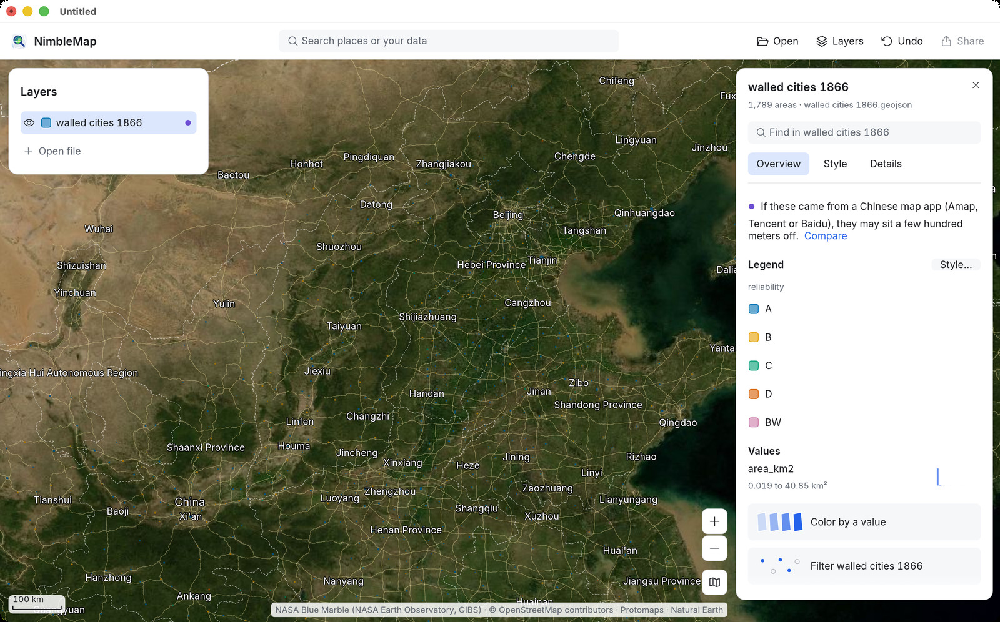
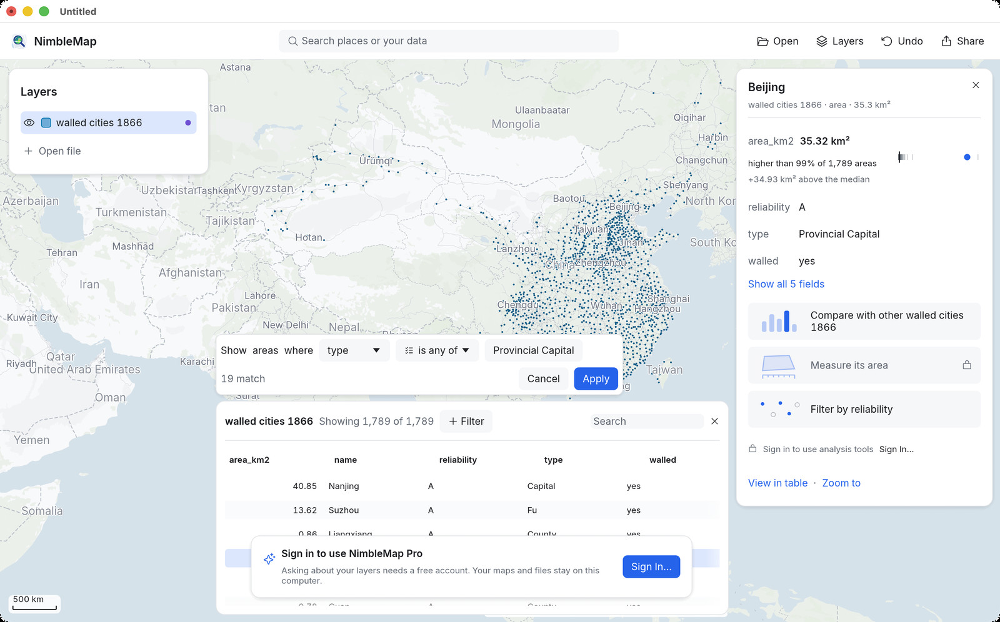

Tutoriel 3 · Gratuit
Les villes fortifiées de Chine en 1866
En 1866, presque tous les sièges de gouvernement en Chine, de la capitale jusqu’aux chefs-lieux de district et aux postes de garnison, étaient entourés d’une muraille. Cet exemple en cartographie 1 789. Vous allez les poser sur l’imagerie satellite, trouver les plus grandes, ne garder que les capitales provinciales et faire une carte à partager.
-
Ouvrir l’exemple
Cliquez sur Examples (Exemples) sur la fiche d’accueil (ou File › Open Example, soit Fichier › Ouvrir un exemple) et choisissez Walled cities of China, 1866 (Villes fortifiées de Chine, 1866). La fiche indique 1,789 areas · walled cities 1866.geojson (1 789 surfaces) ; chaque surface correspond au terrain enclos par une muraille.
La première ligne de la fiche est une hypothèse : If these came from a Chinese map app (Amap, Tencent or Baidu), they may sit a few hundred meters off. (Si ces données viennent d’une application de cartographie chinoise – Amap, Tencent ou Baidu –, elles peuvent être décalées de quelques centaines de mètres.) Ces contours ont été tracés en coordonnées GPS : laissez-les tels quels. Avec vos propres données issues d’une application chinoise, cliquez sur Compare (Comparer) pour voir les deux positions ; voir GCJ-02.
-
Passer au fond de carte satellite
Cliquez sur le bouton du fond de carte en bas à droite de la carte (l’icône de carte pliée, Basemap, Fond de carte) et choisissez Satellite. La plaine, les montagnes et la côte de la Chine du Nord apparaissent sur l’imagerie Blue Marble de la NASA, avec les noms de lieux par-dessus.

À cette distance, les murailles ne sont que de petits points : celles des chefs-lieux de district faisaient souvent moins d’un kilomètre carré. L’imagerie satellite reste nette jusqu’à l’échelle d’une ville environ. Zoomez davantage et l’app passe d’elle-même au plan des rues, puis revient à l’imagerie quand vous dézoomez.
-
Trouver Pékin et voir sa taille
Tapez Beijing dans Find in walled cities 1866 (Rechercher dans walled cities 1866) sur la fiche de la couche (ou dans le champ de recherche de la barre d’outils) et zoomez. Cliquez à l’intérieur de la muraille. La fiche affiche ses informations et sa position parmi les autres : area_km2 35.32 km² (35,32 km²), higher than 99% of 1,789 areas (supérieur à 99 % des 1 789 surfaces).

-
Classer toutes les villes fortifiées
Cliquez sur Compare with other walled cities 1866 (Comparer avec les autres walled cities 1866). La fiche devient une liste classée, 1,789 areas, highest first (1 789 surfaces, par valeur décroissante), où la muraille sélectionnée est mise en évidence. Nankin, l’ancienne capitale du Sud, arrive en tête avec 40,85 km² ; le jeu de données compte deux surfaces fortifiées nommées Beijing. Compare by (Comparer selon) change de champ ; Back (Retour) revient à la fiche.

-
Garder les capitales
Cliquez sur View in table (Voir dans la table), puis sur + Filter (+ Filtre). Complétez la phrase ainsi : Show areas where type is any of Provincial Capital (Afficher les surfaces dont type est parmi Provincial Capital) ; elle indique 19 match (19 correspondent). Ajoutez Capital (Capitale) à la même liste si vous voulez aussi les capitales impériales, puis cliquez sur Apply (Appliquer).

Le champ type suit la hiérarchie des Qing : Capital (capitale), Provincial Capital (capitale provinciale), Fu (préfecture), Zhou, Ting, County (district) et postes militaires (Wei, Suo, garnisons mandchoues). reliability est la note propre au jeu de données, de A à D ; D désigne les lieux qui n’avaient pas de muraille.
-
Colorer les murailles par type
Retirez le filtre (× sur son étiquette) pour revoir toutes les murailles, puis ouvrez l’onglet Style de la couche et choisissez type dans le menu Color (Couleur). Chaque catégorie de ville reçoit sa propre couleur et la Legend (Légende) les liste. Augmentez Opacity (Opacité) ou la Width (Largeur) de l’Outline (Contour) pour que les petites murailles ressortent sur l’imagerie.
Données : Xue, Q., Jin, X., Cheng, Y., Yang, X., Zhou, Y. (2021). The dataset of walled cities and urban extent in late imperial China in the 15th–19th centuries. Earth Syst. Sci. Data 13, 5071–5085, doi:10.5194/essd-13-5071-2021 ; CC BY 4.0. Imagerie satellite : NASA Blue Marble (NASA Earth Observatory, GIBS). Noms de lieux © contributeurs OpenStreetMap, Natural Earth.